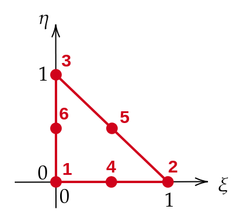

triangle_6_shape_functions#
- pysdic.geometry.triangle_6_shape_functions(natural_coordinates, return_derivatives=False, *, default=0.0)[source]#
Compute the shape functions for a 6-node triangle for given natural coordinates \((\xi, \eta)\).
A 6-node triangle represented in the figure below has the following shape functions:
Node No.
(\(\xi, \eta\))
Shape Function \(N\)
First Derivative (\(\frac{dN}{d\xi}, \frac{dN}{d\eta}\))
1
(0, 0)
\(N_1(\xi, \eta) = (1 - \xi - \eta)(1 - 2\xi - 2\eta)\)
\((-3 + 4\xi + 4\eta, -3 + 4\xi + 4\eta)\)
2
(1, 0)
\(N_2(\xi, \eta) = \xi(2\xi - 1)\)
\((4\xi - 1, 0)\)
3
(0, 1)
\(N_3(\xi, \eta) = \eta(2\eta - 1)\)
\((0, 4\eta - 1)\)
4
(0.5, 0)
\(N_4(\xi, \eta) = 4\xi(1 - \xi - \eta)\)
\((4 - 8\xi - 4\eta, -4\xi)\)
5
(0.5, 0.5)
\(N_5(\xi, \eta) = 4\xi\eta\)
\((4\eta, 4\xi)\)
6
(0, 0.5)
\(N_6(\xi, \eta) = 4\eta(1 - \xi - \eta)\)
\((-4\eta, 4 - 4\xi - 8\eta)\)

Note
If the input
natural_coordinatesare not numpy floating type, they will be converted tonumpy.float64.See also
pysdic.geometry.triangle_3_shape_functions(): Shape functions for 3-node triangle 2D-elements.pysdic.geometry.quadrangle_4_shape_functions(): Shape functions for 4-node quadrangle 2D-elements.pysdic.geometry.quadrangle_8_shape_functions(): Shape functions for 8-node quadrangle 2D-elements.
- Parameters:
natural_coordinates (
numpy.ndarray) – Natural coordinates where to evaluate the shape functions. The array must have shape (n_points, 2), where n_points is the number of points to evaluate.return_derivatives (
bool, optional) – IfTrue, the function will also return the first derivatives of the shape functions with respect to the natural coordinates. By default,False.default (
numbers.Real, optional) – Default value to assign to shape functions when the input natural coordinates are out of the valid range (i.e., not in the triangle defined by (0,0), (1,0), (0,1)). By default,0.0.
- Returns:
shape_functions (
numpy.ndarray) – Shape functions evaluated at the given natural coordinates. The returned array has shape (n_points, 6), where each row corresponds to a point and each column to a node.shape_function_derivatives (
numpy.ndarray, optional) – Ifreturn_derivativesisTrue, the function also returns an array of the first derivatives of the shape functions with respect to the natural coordinates. The returned array has shape (n_points, 6, 2).
- Raises:
TypeError – If the input
natural_coordinatescannot be converted to a numpy array. If the inputreturn_derivativesis not a boolean. If the inputdefaultis not a real number.ValueError – If the input
natural_coordinatesdoes not have shape (n_points, 2).
- Return type:
ndarray | Tuple[ndarray, ndarray]
Examples
import numpy from pysdic.geometry import triangle_6_shape_functions coords = numpy.array([[0.0, 0.0], [0.5, 0.0], [0.0, 0.5], [0.7, 0.5]]) shape_functions = triangle_6_shape_functions(coords) print("Shape function values:") print(shape_functions)
Shape function values: [[1. 0. 0. 0. 0. 0. ] [0. 0 0. 1. 0. 0. ] [0. 0. 0. 0. 0. 1. ] [0. 0. 0. 0. 0. 0. ]]
import numpy from pysdic.geometry import triangle_6_shape_functions coords = numpy.array([[0.0, 0.0], [0.5, 0.0], [0.0, 0.5], [0.7, 0.5]]) values, derivatives = triangle_6_shape_functions(coords, return_derivatives=True) print("Shape function values:") print(values) print("Shape function derivatives:") print(derivatives)
Shape function values: [[1. -0. -0. 0. 0. 0. ] [0. 0 -0. 1. 0. 0. ] [0. -0. 0. 0. 0. 1. ] [0. 0. 0. 0. 0. 0. ]] Shape function derivatives: [[[-3. -3.] [-1. 0.] [ 0. -1.] [ 4. -0.] [ 0. 0.] [-0. 4.]] [[-1. -1.] [ 1. 0.] [ 0. -1.] [ 0. -2.] [ 0. 2.] [-0. 2.]] [[-1. -1.] [-1. 0.] [ 0. 1.] [ 2. -0.] [ 2. 0.] [-2. 0.]] [[ 0. 0. ] [ 0. 0. ] [ 0. 0. ] [ 0. 0. ] [ 0. 0. ] [ 0. 0. ]]]
{kind=link}